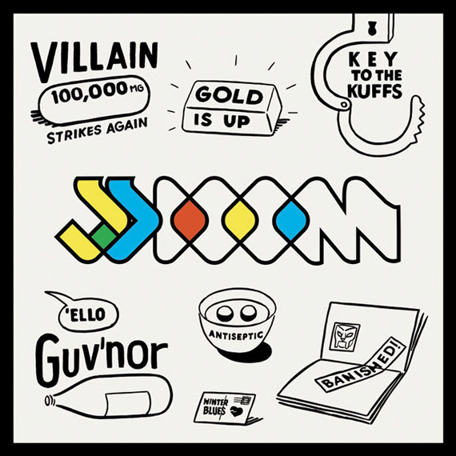

Завораживающе.
On excellence
We are what we repeatedly do. Excellence, then, is not an act, but a habit. — Aristotle
Ólafur Arnalds & Nils Frahm - Stare (2012)
Очень приятная EP'шка.
Время, вперед!
Интересно наблюдать за оркестром, да и вообще интересно.
Just curious
Birdy Nam Nam - Goin' In (Skrillex "Goin' Hard" Mix)
Энергично!
JJ DOOM - Key To The Kuffs (2012)

Приятный альбом)
Омлет в стакане
Смирнов открыл тут мне глаза: показал, зачем нужна микроволновка. Он сделал в ней омлет! А я сегодня этот трюк повторил)
Рецепт: взять стакан (или кружку), разбить в него два яйца, хорошо их там взболтать, добавить децл молока, посолить и тп по вкусу (Леха добавлял еще кусочки белого хлеба, а я черного), щепотку сухого укропа, ну не знаю, что вы там любите?))
Все это перемешивается и прямо в стакане ставится в микроволновку. На средней мощности готовится минуты 3-4. Есть надо прямо из стакана/кружки)
Enjoy!
Skhizein
На память, а-то забуду. Отличный мульт!
Автопортреты
Отличная подборка автопортретов известных фотографов.